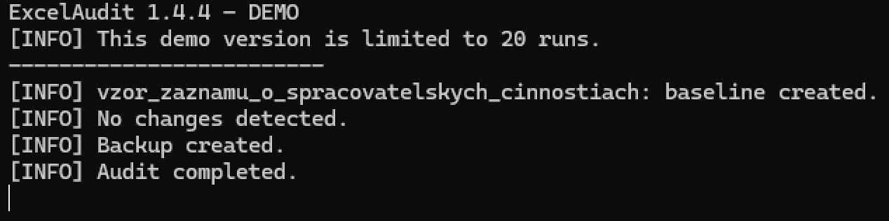
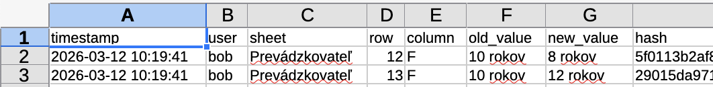
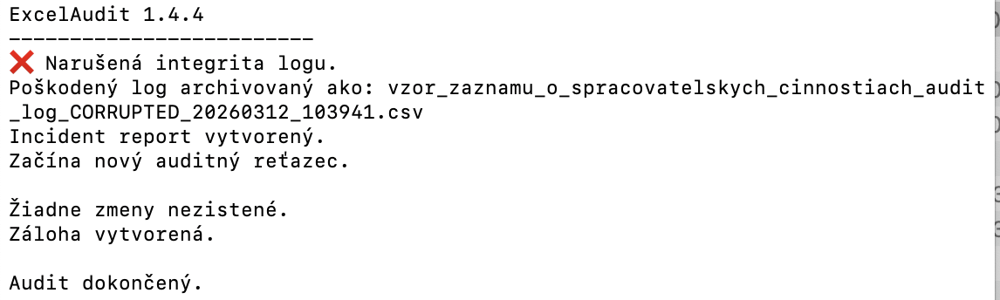

Identify who changed your spreadsheet data and understand how your Excel files were modified.
Tracking who edited an Excel file can be difficult, especially when files are shared, copied, or modified outside controlled environments.
Try ExcelAudit on your own Excel files.
MacOS demo Windows demoRuns locally. No installation. No cloud. No data leaving your device.
Excel does not always provide clear or reliable information about who modified specific data. File-level metadata can be incomplete or overwritten, and built-in change tracking features are often limited or disabled.
In many cases, it is easier to detect what changed in a spreadsheet than to reliably identify who made the change. Reviewing data differences is often the first step toward understanding how a file was modified.
ExcelAudit helps you track spreadsheet changes and build a clearer picture of how your data was modified over time. While it focuses on detecting and recording changes, this information can help you understand the sequence of edits and identify potential sources of modification.
Instead of relying only on file metadata, you can review actual spreadsheet changes and better understand what happened inside the file.
Baseline created for tracking Excel file changes

Detected changes recorded in the audit log

Audit log integrity check detecting modification issues

© 2026 Robert Krecmer – ExcelAudit